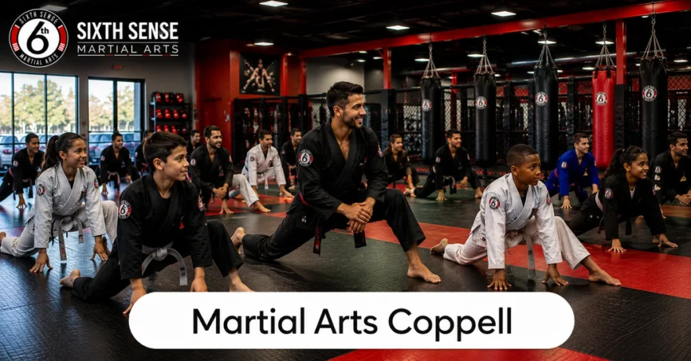
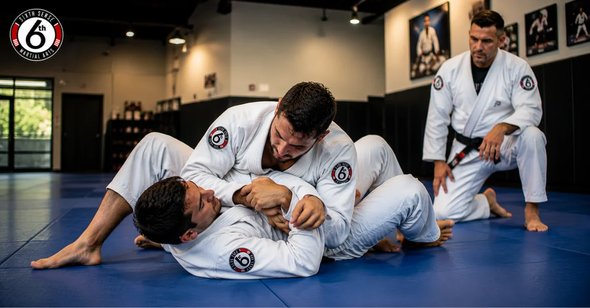
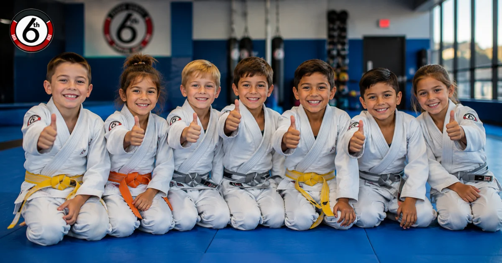

Martial Arts Coppell Your Guide to the Best Training in Town

Why Martial Arts Coppell Should Be on Your Radar
If you have been searching for quality martial arts Coppell has a hidden gem that most people overlook. Sixth Sense Martial Arts sits right on MacArthur Blvd and offers world class BJJ and Muay Thai training for all ages. Whether you want to get in shape, learn self defense, or build confidence in your kids, this gym delivers real results without the ego. I have spent time looking into what makes this place stand out from other options in the DFW area. So in this guide I will walk you through everything you need to know before you step on the mat for the first time.
Why Martial Arts in Coppell is Booming Right Now
Over the past few years the demand for martial arts training has grown rapidly across Texas. Coppell in particular has seen a major rise in families and adults looking for more than just a regular gym membership. People want something that challenges both their body and their mind. As a result martial arts schools in the area are filling up faster than ever. Moreover parents are realizing that screen time and sedentary lifestyles are affecting their children. Because of this they are turning to martial arts as a solution that teaches discipline and keeps kids active. The trend is clear and it is not slowing down anytime soon.
What Makes Sixth Sense MMA the Top Choice
Not every gym in Coppell is built the same. Sixth Sense Martial Arts stands out because it focuses on authentic training rather than flashy marketing. The head coach Matheus brings over 15 years of hands on experience to every class. In addition the facility is clean modern and designed with a thoughtful layout that gives everyone enough space to train comfortably. Furthermore the coaching staff pays attention to small details and makes sure each student gets personal guidance. Many gyms pack classes with too many students but here quality always comes before quantity. That is exactly why members keep coming back week after week.
Brazilian Jiu Jitsu Classes for Every Level
BJJ is the backbone of training at Sixth Sense MMA. Whether you are a complete beginner or someone who has been rolling for years there is a class that fits your level. The adult BJJ program focuses on ground fighting submissions and positional control. Meanwhile the teaching approach breaks down complex techniques into simple steps so nothing feels overwhelming. On top of that students learn how to use leverage instead of brute strength. This means even smaller individuals can defend themselves against bigger opponents. Consequently many people who start BJJ at Sixth Sense notice a boost in both their fitness and their problem solving skills within the first few weeks.

Muay Thai Training That Builds Real Power
If striking is more your style then the Muay Thai program at Sixth Sense will not disappoint. Known as the art of eight limbs Muay Thai teaches you to use your fists elbows knees and shins effectively. As a result you develop full body coordination and explosive power over time. The classes mix pad work heavy bag sessions and controlled sparring so you get a complete workout every session. In fact many members say that Muay Thai burns more calories than any gym routine they have tried before. Additionally the coaches focus on proper form first which helps prevent injuries and builds a solid foundation for long term progress.
Kids Martial Arts Programs Parents Trust
Finding the right activity for your child can feel overwhelming. However Sixth Sense MMA makes it simple with structured kids programs that blend fun with real learning. Children learn basic BJJ techniques in a safe and encouraging environment. At the same time they develop focus discipline and respect for others. The coaches understand how to work with young minds and they keep classes engaging without being too intense. Because of this kids actually look forward to training instead of treating it like a chore. Parents in Coppell have shared that their children show improved behavior at school and at home after just a few months of consistent training.

Anti Bullying Program That Actually Works
Bullying remains a serious concern for families across Coppell and the DFW area. Sixth Sense MMA addresses this head on with a dedicated anti bullying program for kids. Rather than teaching children to fight back aggressively the program empowers them to handle difficult social situations with confidence. For instance kids learn how to set boundaries use assertive body language and de-escalate confrontations. In addition they build inner strength through training that makes them less of a target in the first place. One parent shared that their son used to come home upset every day but after joining Sixth Sense he now stands up for himself calmly. That kind of transformation speaks for itself.
Teen Martial Arts for Confidence and Focus
The teenage years are tough and most teens struggle with self image peer pressure and motivation. Fortunately Sixth Sense MMA offers dedicated teen BJJ and Muay Thai classes designed specifically for ages 13 to 17. These classes give teenagers a healthy outlet for stress and energy. Moreover the training environment teaches them accountability and teamwork in ways that school sports sometimes miss. Teens who train here consistently report feeling more confident and focused in their daily lives. Similarly the physical conditioning improves their athletic performance across other sports as well. Instead of spending hours on their phones they spend time building skills that will serve them for life.
Women Self Defense Training in Coppell
Personal safety is something every woman thinks about. Sixth Sense MMA recognizes this and has been developing a dedicated self defense program specifically for women. The gym already welcomes women into all its BJJ and Muay Thai classes. In fact the facility features an L shaped layout that provides added privacy when needed. Therefore women of all fitness levels can train comfortably without feeling out of place. The techniques taught focus on real world scenarios like escaping grabs controlling distance and staying calm under pressure. Above all the goal is to give women practical tools they can actually use not just theoretical moves that look good on a mat.
Physical and Mental Benefits You Will Notice
Martial arts training goes far beyond just learning how to fight. When you train consistently at Sixth Sense MMA your body changes in ways a regular gym simply cannot match. For example your cardiovascular endurance improves because every class pushes your heart rate. Likewise your flexibility balance and coordination all get better naturally through the movements. However the mental benefits are equally impressive. Training teaches you to stay calm under pressure think clearly in stressful situations and push through discomfort. As a result many members report lower stress levels better sleep and an overall sense of well being. These gains compound over time and carry into every part of your life.
What to Expect in Your First Class
Walking into any new gym can feel intimidating but Sixth Sense MMA makes the first visit easy. They offer a free no obligation trial class so you can experience training before committing. When you arrive the coaching staff greets you and walks you through everything you need to know. You do not need any prior experience or special gear for your first session. Subsequently you join a class where the coach pairs you with a friendly training partner. The pace is manageable and nobody expects perfection on day one. After the class the team answers your questions without any high pressure sales pitch. It is a genuinely welcoming experience from start to finish.
How to Pick the Right Martial Arts Gym
Choosing a gym is a big decision especially if you are new to martial arts. Therefore it helps to know what to look for. First check the credentials and experience of the instructors. A great coach can make even the hardest technique feel simple. Second visit the facility and pay attention to cleanliness and organization. Third observe a class and notice how the coach interacts with students. Are they patient and supportive or do they just bark orders. Finally read reviews from real members because their experiences tell you what marketing cannot. Sixth Sense MMA checks every one of these boxes which is why it has earned a strong reputation in Coppell.
Community That Feels Like Family
One thing that truly sets Sixth Sense MMA apart is its community. Walking into this gym feels different because members genuinely care about each other. Beginners are welcomed warmly and experienced students take time to help newcomers learn. This kind of culture does not happen by accident it is built intentionally by the coaching staff. Furthermore the gym hosts events and gatherings that bring members closer together beyond just training. People from all backgrounds train side by side and the mutual respect on the mat extends into real friendships off it. As one member put it the gym has become their second home. That says everything about the culture here.
Flexible Schedule for Busy Lives
Let us be honest most people skip workouts because of scheduling conflicts. Sixth Sense MMA understands this and offers classes throughout the day to fit different lifestyles. Morning sessions work great if you want to start your day with energy. Evening classes are perfect for working professionals who need to unwind after a long day. Additionally weekend slots are available for those who have packed weekday schedules. The gym also serves members from surrounding areas like Valley Ranch Irving Carrollton Grapevine and Lewisville. So no matter where you are coming from or what your daily routine looks like there is a class time that works for you. Convenience should never be a barrier to your growth.
Conclusion
Martial arts Coppell has become more than just a trend it is a lifestyle that transforms lives every single day. Sixth Sense MMA at 817 S MacArthur Blvd offers everything you need under one roof from BJJ and Muay Thai to kids programs and anti bullying training. The experienced coaches welcoming community and flexible schedule make it the clear choice for anyone in the Coppell and DFW area. So whether you are a parent looking for structure for your child or an adult chasing fitness and confidence this gym has you covered. Take advantage of their free trial class and experience it for yourself. Your journey starts with a single step on the mat.
Contact Us
Have questions about our classes or training programs. We would love to hear from you. Reach out to us today and let us help you start your martial arts journey the right way.
📍 817 S MacArthur Blvd #100 Coppell TX 75019
📞 (469) 972-7800
Follow Us on Social Media
Stay connected with the Sixth Sense Martial Arts community. Follow us for training tips belt grading updates student highlights and exclusive offers.
FAQ’s
Classes are available for kids teens and adults. Children can start learning BJJ at a young age while teens aged 13 to 17 have their own dedicated sessions. Adults of all fitness levels are also welcome to join both BJJ and Muay Thai programs.
No prior experience is needed at all. The coaches design beginner friendly classes that break down every technique step by step. You can walk in on day one with zero knowledge and still have a great first session.
Yes the gym offers a completely free no obligation trial class. You can show up experience a full session and decide if it feels right for you without any pressure to sign up immediately.
The gym primarily teaches Brazilian Jiu Jitsu and Muay Thai. There is also a dedicated anti bullying program for kids and a developing self defense program for women. Both striking and grappling are covered thoroughly.
The anti bullying program teaches children to handle tough social situations with confidence and composure. Kids learn boundary setting assertive body language and de-escalation skills rather than aggressive fighting. This builds inner strength that makes them less of a target.
Sixth Sense Martial Arts is located at 817 S MacArthur Blvd Suite 100 Coppell TX 75019. You can call at 469-972-7800 or email info@sixthsensemma.com for more information about classes and schedules.
Train with us in Coppell
The first class is free. Shorts, a t-shirt and a water bottle. We lend the rest.
Book a free class